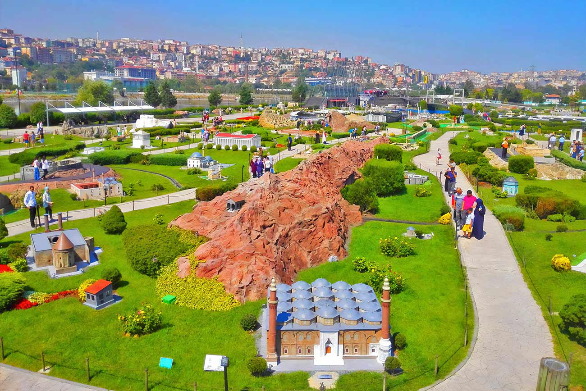

İstabul'da Gezilebilicek yerler
1.Ayasofya Cami

İstanbul’da gezilecek yerler listesinin ilk sırasına koyabileceğimiz çok sayıda yer var. Seçim yapmak zor olsa da, birinci her zaman dünyanın en eski katedrallerinden biri olan Ayasofya ilk sırada geliyor. Ayasofya, günümüzdeki görünümüne en yakın halini İmparator I. Justinianus’un görevlendirdiği Trallesli Anthemios ve Miletoslu İsidoros’un çalışmaları sonunda kazanmış.İki mimarın çalışmalarıyla yaklaşık 5 yılda yapımı tamamlanan Ayasofya, döneminin en kısa sürede inşa edilen katedrallerinden biri olmuş. 1935 yılında müze olan Ayasofya, 2020 yılında cami statüsünü aldı.
2.Topkapı Sarayı Müzesi

İstanbul’un en turistik bölgesi Tarihi Yarımada’da bulunan Topkapı Sarayı, İstanbul’da gezilecek yerler listesinin ilk sıralarında olmalı elbette. Fatih semtine bağlı Sarayburnu’nda bulunan Topkapı Sarayı, İstanbul fethedildikten sonra inşa edilmiş ve 400 yıl süreyle Osmanlı İmparatorluğu’nun idare merkezi olarak hizmet vermiş. 3 Nisan 1924’te müze haline getirilmiş. ve yaklaşık 300 binin üzerinde arşiv belgesine ev sahipliği yaptığı için dünyada bulunan saray müzelerinin en büyüklerinden.
3.Sultanahmet Cami

İstanbul’un en meşhur camisi olan Sultanahmet Camii, sadece yerli turistler arasında değil yabancı turistler arasında da oldukça ünlü. Yabancı turistler camiyi Mavi Camii anlamına gelen Blue Mosque adıyla tanıyorlar. Bunun en önemli nedeni ise caminin içinin 20 binin üzerinde İznik çinisiyle döşenmesi ve masmavi bir görüntüye sahip olması. Sultan I. Ahmet’in emri üzerine 17. yüzyılda Mimar Sinan’ın öğrencisi Sedefkar Mehmet Ağa tarafından inşa edilen cami, Ayasofya’nın tam karşısında konumlanıyor.
4.Kapalı Çarşı
İstanbul’da gezilecek yerler arasında Türkiye’nin tüm dokularını bir arada bulabileceğin yer Kapalıçarşı. Beyazıt’ta bulunan çarşı, yabancı turistler tarafından Grand Bazaar (Büyük Çarşı) olarak tanınıyor. Kapalıçarşı'nın inşasına 1451-148 yıllarında Fatih Sultan Mehmet döneminde başlandı. Açılışı ise 1461 yılında gerçekleşti. İlk açıldığında Osmanlı İmparatorluğu’nun gelirini artırmak amacını taşıyan çarşı, zaman içinde büyümüş ve bölgedeki en önemli ticaret merkezi haline gelmiş.
5.Dolmabahçe Sarayı

Mustafa Kemal Atatürk’ün hayata gözlerini yumduğu bu sarayın hepimizin kalbindeki yeri büyük. Bu nedenle de Dolmabahçe Sarayı, İstanbul’da gezilecek yerler listesinin belki de en duygusal yerlerinden biri. Dolmabahçe Sarayı’nın inşasına 1856 yılında Sultan Abdülmecit’in isteği üzerine başlandı. Abdülmecit, bu sarayın estetik ve Avrupai bir tarza sahip olmasını istemiş. 285 tane oda, 46 adet salon, 6 hamam ve 68 tuvaletin bulunduğu sarayın yapımı padişaha oldukça pahalıya olmuş. Özenerek yaptırdığı İstanbul’un en büyük saraylarından olan Dolmabahçe’de sadece 5 yıl oturabilmiş.
6.İstanbul Boğazı

İstanbul denilince ilk akla gelen yerlerden biri İstanbul Boğazı. İstanbul’a tüm o güzelliğini katan yer bile diyebiliriz hatta. Marmara Denizi ve Karadeniz’in birleştiği nokta olan İstanbul Boğazı’nı düz bir çizgi haline getirirsek 32 kilometre uzunluğa sahip oluyor. Anadolu Hisarı ve Rumeli Hisarı arasında uzanan İstanbul Boğazı’nda turlamak istersen Şehir Hatları tarafından düzenlenen boğaz turlarına katılabilirsin. Uzun ve kısa olmak üzere iki çeşit tur düzenlendiğini de belirtelim. Ayrıca tek yön olarak da boğaz turu seferleri yapılıyor.
7.Galata Kulesi

İstanbul’un siluetini oluşturan yapılardan biri olan Galata Kulesi, o kadar çok turist ağırlıyor ki her daim önünde uzun kuyruklar oluşuyor. Dünyadaki en eski kuleler arasında yer alan Galata Kulesi, Bizans İmparatoru Justinianus döneminde, 1348 yılında, Cenevizliler tarafından inşa edildi. Yangın ve depremler yüzünden harap olan kulenin son onarımları 1967 ve 2001 yıllarında gerçekleşti.
8.Yerebatan Sarnıcı

Bizans İmparatorluğu döneminden İstanbul’da kalan en değerli yapılardan biri de Yerebatan Sarnıcı. 532 yılında İmparator Justinianus’un emri üzerine inşa edilen sarnıç, o yıllarda sarayın ve halkın su ihtiyacı için kullanılıyordu. Hatta İstanbul’un fethinden sonra da bir süre boyunca su kaynağı olarak kullanımı devam etmiş. Geçmişte sarnıç üzerinde Stoa Bazilikası bulunduğu için Bazilika Sarnıcı olarak da bilinir.
9.Sultanahmet Meydanı

Sultanahmet Meydanı, İstanbul’da yapılan turistik gezilerin başlangıç noktası. Roma İmparatorluğu’nun bölgede hüküm sürdüğü yıllarda hipodrom olarak kullanılan meydan, Bizans İmparatorluğu’nun hakimiyetindeyken de hipodrommuş. Bu yüzden At Meydanı olarak bilinir. O dönemlerde yerli halk, hep bu meydanda toplanıp eğlenirmiş. Günümüzde kalıntıları hala görülebilen Obelisk, Yılanlı Sütun ve Örme Dikilitaş gibi dikilitaşlar hipodromu ikiye bölmek için kullanılırmış.
10.İstiklal Caddesi

İstanbul demek Beyoğlu demek, Beyoğlu demek İstiklal Caddesi demek. İstanbul’da gezilecek yerler arasında en popüler ve en ikonik olan yer kuşkusuz İstiklal Caddesi. İstanbul’un en eski semtlerinden biri olan Beyoğlu’nda konumlanan cadde, Taksim Meydanı’nda başlıyor ve Tünel’de son buluyor. İstiklal Caddesi, modern görünümünü 19. yüzyılda kazanmış. Cumhuriyet’in ilanından sonra, 1935 yılında "İstiklal Caddesi" adını alan cadde "Grand Rue de Péra", "Büyük Cadde" ve "Cadde-i Kebir" gibi isimlerle de bilinir.
11.Taksim Meydanı

Sultanahmet Meydanı’ndan sonra İstanbul denilince akla Taksim Meydanı geliyor. Şehrin en hareketli noktalarından biri olan Taksim Meydanı dairesel bir yapıda ve hemen ortasında Cumhuriyet Anıtı yer almakta. 1928 yılında yapılan bu anıtın bir tarafı Kurtuluş Savaşı, diğer tarafı ise Cumhuriyet’in ilan edilmesinden sonra Türkiye'nin gelişimini simgeliyor. Savaşın anlatıldığı tarafta Atatürk, askerlerinin yanındayken diğer tarafta İsmet İnönü ve Fevzi Çakmak’ın yanında sivil kıyafetleriyle duruyor.
12.Kız Kulesi

İstanbul’un en romantik adreslerinden biri olan kule, Üsküdar açıklarında konumlanıyor. Kız Kulesi’nin tam olarak ne zaman inşa edildiğine dair net bir kaynak bulunmuyor. Kız Kulesi birçok efsaneye sahip. Efsaneye göre Hero, Sounion'daki bir tapınağın rahibesi olan Hero için Leander her gece yüzerek kuleye giderdi. Bizans İmparatorluğu yıllarında ise "Leandros Kulesi" ismiyle de bilinir. 1764 yılında III. Sultan Mustafa tarafından inşa edilen Kız Kulesi tarih boyunca gemilerden vergi toplama, savunma, karantina hastanesi, radyo istasyonu gibi amaçlarla kullanıldı.
13.Mısır Çarşısı
.jpg)
Kapalıçarşı’dan sonra o eski İstanbul atmosferini en iyi yansıtan yer, Mısır Çarşısı. 17. yüzyılda inşa edildiği zaman Osmanlı Devleti’nde ticaretin kalbinin attığı noktalardan biriymiş. Yeni Camii’nin bir parçası gibi inşa edildiği için ilk yıllarda ismine Yeni Çarşı da denilmiş. Sonraları Mısır’dan gelen baharatlar ve çayların satışıyla birlikte bugünkü adı verilmiş.
14.Eminönü
Eminönü, şehrin en meşhur semtlerinden biri. Rüstem Paşa Camii ve Süleymaniye Camii tarafından çevreleniyor. Eminönü’ne geldiğinde Galata Köprüsü’nde yer alan restoranlarda balık ekmek yiyebilir, güvercin ve martıları besleyebilir, aradığın birçok şeyi bulabileceğin dükkanlarda alışverişe çıkabilirsin. Özellikle düğün, nişan gibi özel gün ya da gecelerde lazım olabilecek aklına gelen her şey Eminönü’nde satılıyor. Tahtakale, Kapalıçarşı, Mısır Çarşısı gibi duraklarında burada yer aldığını unutma!
15.Süleymaniye Camii ve Külliyesi

Bir Mimar Sinan eseri olan Süleymaniye Camii, İstanbul’da gezilecek yerler arasında en hayranlık uyandıran yapılardan biri. İstanbul’un Fatih ilçesine bağlı Süleymaniye semtinde bulunan camii, adından da anlaşılabileceği üzeri Osmanlı’nın ünü dünyalara ulaşan padişahı Muhteşem Süleyman’ın emriyle inşa edilmiş. 1550-1557 yılları arasında inşaatı tamamlanan caminin her bir detayı ince düşünülmüş ve çok iyi hesaplanmış. Süleymaniye Camii’nin konumlandığı Süleymaniye Külliyesi de oldukça geniş bir alana sahip. 15 bölümü olan külliyede medreseler, hastane, kütüphane, hamam, sıbyan mektebi gibi alanlar yer alıyor.
16.İstanbul Modern Sanat Müzesi

2004 yılında Karaköy’de kurulan çağdaş sanat müzesi, Türkiye'nin çağdaş sanat eserlerini sergileyen önemli bir müze olarak biliniyor. 2018 yılında Galataport projesi kapsamında geçici olarak taşınsa da 2023 yılında yeni binasına dönen müzede geçici sergilerin yanı sıra kalıcı koleksiyonlar yer alıyor. Atölye çalışmaları, konferanslar ve etkinliklerin düzenlendiği müze sanatseverlerin fazlasıyla beğeneceği tarzda.
17.İstanbul Arkeoloji Müzeleri

2004 yılında Karaköy’de kurulan çağdaş sanat müzesi, Türkiye'nin çağdaş sanat eserlerini sergileyen önemli bir müze olarak biliniyor. 2018 yılında Galataport projesi kapsamında geçici olarak taşınsa da 2023 yılında yeni binasına dönen müzede geçici sergilerin yanı sıra kalıcı koleksiyonlar yer alıyor. Atölye çalışmaları, konferanslar ve etkinliklerin düzenlendiği müze sanatseverlerin fazlasıyla beğeneceği tarzda.
18.Miniatürk
Türkiye’nin ilk minyatür parkı olan Miniatürk, İstanbul’un turistik duraklarından biri. İstanbul’da bulunan 57, Anadolu’nun çeşitli yerlerinden 12 ve Türkiye sınırlarına günümüzde dahil olmasa da Osmanlı coğrafyasından 12 yapının 1/25 ölçekli maketlerinin bulunduğu Miniatürk, 60.000 metrekarelik bir alanı kaplıyor. Miniatürk’te sergilenen yapılar, 9 farklı dilde rehberlerle turistlere tanıtılıyor. Bu yapıların yanında amfi tiyatro, alışveriş merkezi ve çocuklar için oyun alanları da bulunuyor.
19.Pera Müzesi
1893 yılında inşa edilen Bristol Oteli’nin binasında bulunan Pera Müzesi, İstanbul’da gezilecek müzeler arasında en çok tercih edilenlerden. Suna ve İnan Kıraç Vakfı, müzenin restore edilip müze haline getirilmesi için Mimar Sinan Genim’i görevlendirmiş ve 2005 yılında otel Pera Müzesi olarak ziyaretçilere açılmış. Pera Müzesi’nin kendi koleksiyonları arasında “Oryantalist Resim”, “Anadolu Ağırlık Ölçüleri” ve “Kütahya Çini ve Seramikleri” bulunuyor. Bunun dışında müzede farklı sergiler de düzenleniyor.
20.Sakıp Sabancı Müzesi

Hacı Ömer Sabancı, Hidiv ailesinden arazisinde bulunan at heykeline ithafen Atlı Köşk adıyla bilinen bir köşk satın almış. Sabancı ailesinin köşkte yaşadığı uzun yıllar boyunca köşk hep geniş bir koleksiyona ev sahipliği yaparmış. Özellikle Sakıp Sabancı’nın kendi hat ve resimleri ile Osmanlı ve İslam sanatından oluşan özel koleksiyon çok ilgi çekermiş. 1998 yılında aile, köşkü Sabancı Üniversitesi’ne bağışlamış ve müze haline getirilmesini istemiş. Sakıp Sabancı’nın özel koleksiyonun yanında kitaplar, mobilyalar ve dekoratif objeleri de görebileceğin müzede bazı dönemlerde Abidin Dino’nun eserleri de bulunuyor.
21.Rahmi M. Koç Müzesi

Ankara ve Cunda’ya gittiysen oralardaki Rahmi Koç müzelerini gezmişsindir ama en meşhur Rahmi Koç Müzesi İstanbul’da Hasköy semtinde konumlanıyor. Üstelik burası Türkiye’nin ilk sanayi müzesi. 1994 yılında Rahmi Koç’un destekleriyle 27 bin metrekarelik bir alana açılan müzenin 3 bölümü var. Açık Hava Sergileme Alanı, Tarihi Hasköy Tersanesi ve Mustafa V. Koç Binası olarak adlandırılan bu 3 bölümde klasik otomobiller, makineler, bilimsel aletler, ulaşım araçları gibi geniş bir koleksiyon bulunuyor.
22.Emirgan Korusu

İstanbul denilince akla ilk gelen şeylerden biri de lale. Lale denildiğinde ise Emirgan Korusu. Her yıl bahar aylarında Emirgan Korusu rengarenk lalelerle süsleniyor. Ve yine her yıl Nisan ayında düzenlenen Lale Festivali dolup taşıyor. Korudayken Sarı Köşk, Pembe Köşk ve Beyaz Köşk’ü de gezebilirsin. Hatta bu köşklerde kahvaltı da yapabilirsin.
23.Yıldız Sarayı

III. Selim döneminden önce, I. Abdülhamit’in eşi Rabia Sultan tarafından yaptırılan bir köşk üzerine inşa edilmeye başlanan Yıldız Sarayı’nın II. Mahmut, Abdülmecit ve Abdülaziz dönemlerinde eklemelerle yapımına devam edilmiş. II. Abdülhamit döneminde ise Osmanlı’nın idare merkezi haline gelmiş. II. Abdülhamit bu sarayda yaşarken sarayın genişletilmesi ve dekorasyonuyla bizzat ilgilenmiş. II. Abdülhamit’in isteğiyle Küçük Mabeyn Köşkü, Çit Kasrı, Güvercinlik Binası gibi bölümler eklenen saray, beş yüz bin metrekarelik bir alana yayılmış.
24.Fatih Camii

Mimarı Atik Sinan (Sinaüddin Yusuf bin Abdullah) olan, 7 tepeli İstanbul’un 4. tepesine inşa edilen Fatih Camii de görülmesi gereken yerlerden. Böylece bu cami, İstanbul’da sultanın yaptırdığı ilk cami olmuş ve şehirdeki Osmanlı hakimiyetini simgeleyen bir yapı haline gelmiş. Fatih Camii Külliyesi’nde medrese, darüşşifa, kervansaray ve hamam da bulunuyor. Ancak cami depremler ve yangınlardan zarar görünce yeniden inşa edildiği için ilk görünümünden uzaklaşmış.
25.Yeni Camii
Yeni Camii de Eminönü’nde konumlanıyor ve İstanbul’un simgelerinden biri. III. Murat’ın eşi Safiye Sultan’ın emriyle 1597’de inşaatı başlayan cami, ancak 1665 yılında IV. Mehmet’in annesi Turhan Sultan’ın isteği üzerine tamamlanabilmiş. İnşaatı bu kadar gecikip de Sultanahmet ve Süleymaniye’den sonra tamamlanınca da adına Yeni Camii denmiş.
26.Eyüp Sultan Camii

İstanbul’da en çok turist çeken camilerden biri olan Eyüp Sultan Camii, Haliç’te bulunuyor. Caminin yer aldığı konumunun, Hz. Muhammed’in bayraktarları arasındaki en önemli kişi olan Ebu Eyyub el-Ensari’nin İstanbul’un 7. yüzyıldaki kuşatması esnasında şehit düştüğü nokta olduğuna inanılıyor. Fatih Sultan Mehmet, İstanbul’u fethettikten 5 yıl sonra bu değerli kişiliğin anısına bir cami inşa edilmesini ister. Caminin inşasından sonra Osmanlı padişahları da kılıç kuşanma merasimleri için burayı tercih eder.
27.Pierre Loti Tepesi

İstanbul’da gezilecek yerler arasında şüphesiz en güzel manzaraya sahip noktalardan biri Pierre Loti Tepesi. Haliç manzarasını panoramik olarak izleyeceğin tepenin adı, Julien Viaud adlı Fransız yazardan geliyor. Julien Viaud, Osmanlı İmparatorluğu'nu bilen, sık sık ziyarette bulunan bir Fransız deniz subayı ve yazar. Kullandığı takma ismi ise Pierre Loti. Günümüzdeki ismi de işte bu lakaptan geliyor. Eyüp Sultan Camii’ye gitmek için birçok ulaşım bulunuyor. Ama içlerinde en keyiflisi teleferiğe binmek oluyor. Pierre Loti de kahvaltı keyfi de bir başka oluyor.
28.Gülhane Parkı

Nazım Hikmet’in “Ceviz Ağacı” şiirinden tanıdığımız Gülhane Parkı’na girdiğin andan itibaren, Cem Karaca’nın şiirden bestelediği şarkıyı mırıldanmaya başlayacaksın. Geçmişte Topkapı Sarayı’nın arka bahçesi olarak kullanılan park, padişahları ağırlamış bir alan. Türkiye’deki en temiz parklardan biri olarak bilinen Gülhane Parkı’nın bu özelliğini korumaya devam etmesi için temizliğine ve park düzenlemelerine ekstra özen gösteriliyor. Parkın içindeki çay bahçeleri, Tarihi Yarımada’yı karış karış gezdikten sonra bir ağacın altında serinlemek isteyenlerin uğrak noktası.
29.Büyük Mecidiye Camii
Meşhur Ortaköy fotoğraflarının ana karakterine geldi sıra. Boğazın kenarında köprünün ayağına yakın olduğu için Ortaköy’e giden herkes mutlaka bu camiyi de içine alan bir manzara fotoğrafı çektiriyor. Eminim mutlaka böyle bir fotoğraf görmüşsündür, ancak caminin asıl adının Büyük Mecidiye Camii olduğunu biliyor muydun? Ortaköy’de olduğu için halk arasında Ortaköy Camii diye geçse de gerçek adı farklı. Caminin yapımına Sultan Abdülmecit’in isteği üzerine 1854 yılında başlanmış. 1856 yılında ise tamamlanmış. Mimar olarak da Nigoğos Balyan ve Garabet Amira çalışmış.
30.Atatürk Arboretumu
Belgrad Ormanı’nın hemen yanında bulunan Atatürk Arboretumu, İstanbul’un her mevsim en güzel yerlerinden. İlkbaharda ve yazın yemyeşil doğasıyla ayrı, sonbahar renkleriyle ayrı güzel olan arboretum, kış mevsiminde de bir başka atmosfere bürünüyor. Ağaç parkı olarak bilinen bu alanın çalışmaları 1940’lı yıllarda başlamış ve dünyanın farklı yerlerden ağaçlar getirilip dikilmiş. Şimdilerde ise 1500’den fazla ağaç türünün bulunduğu bir alan konumunda.